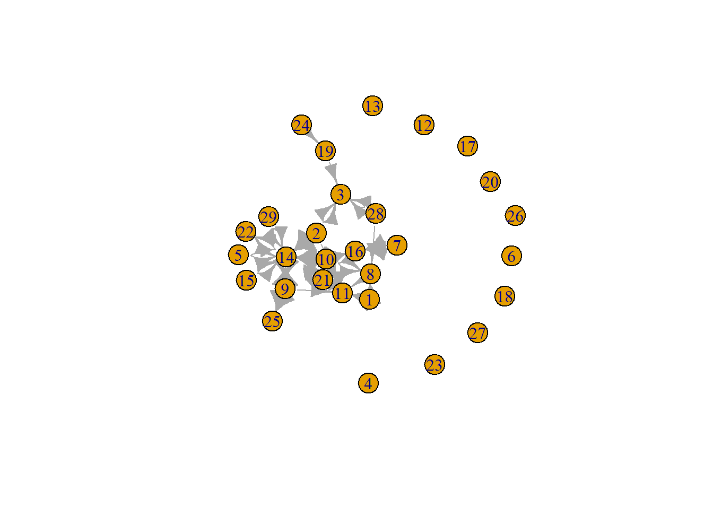
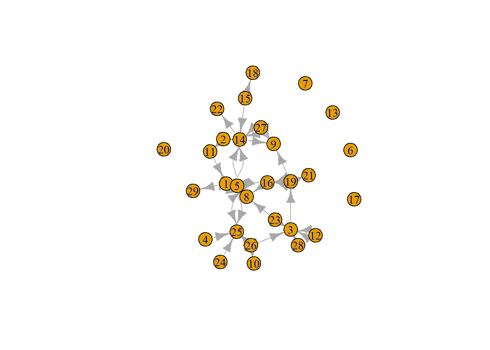
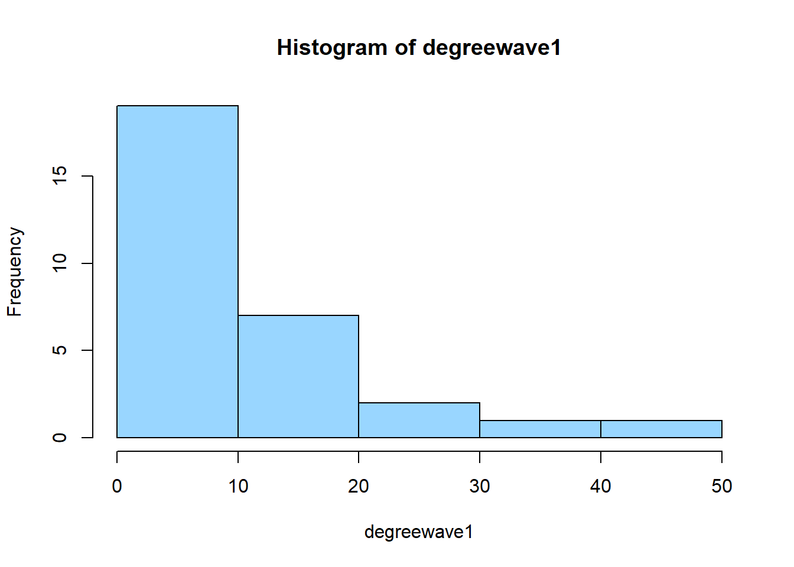
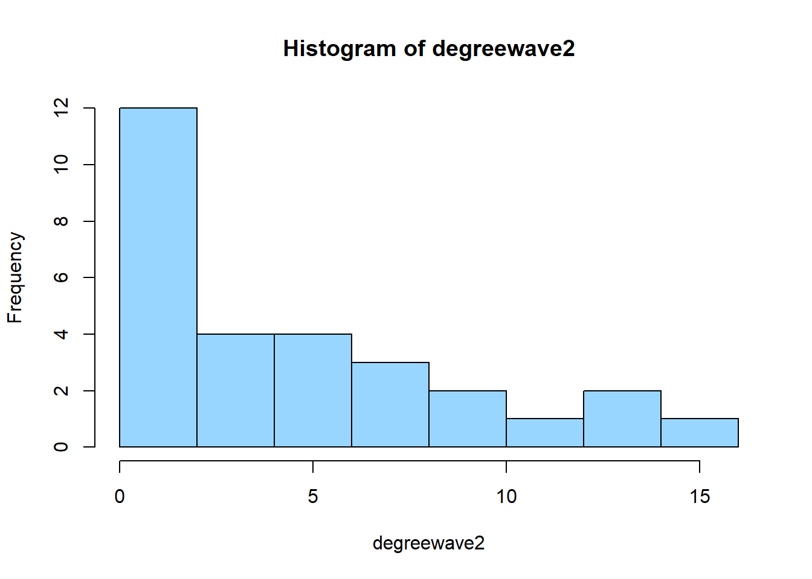
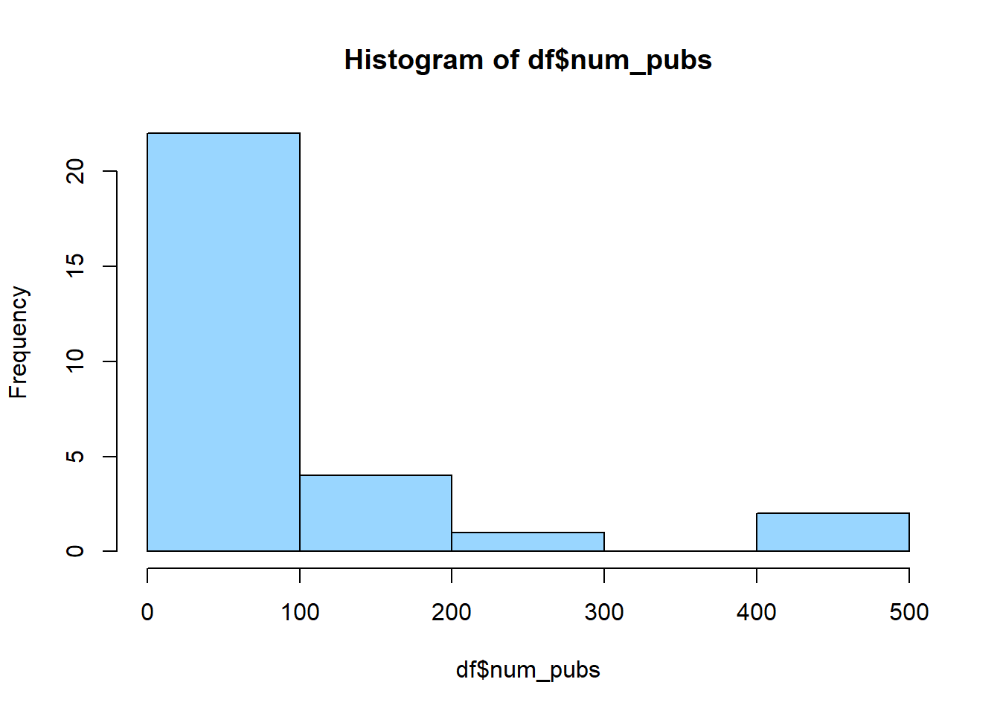
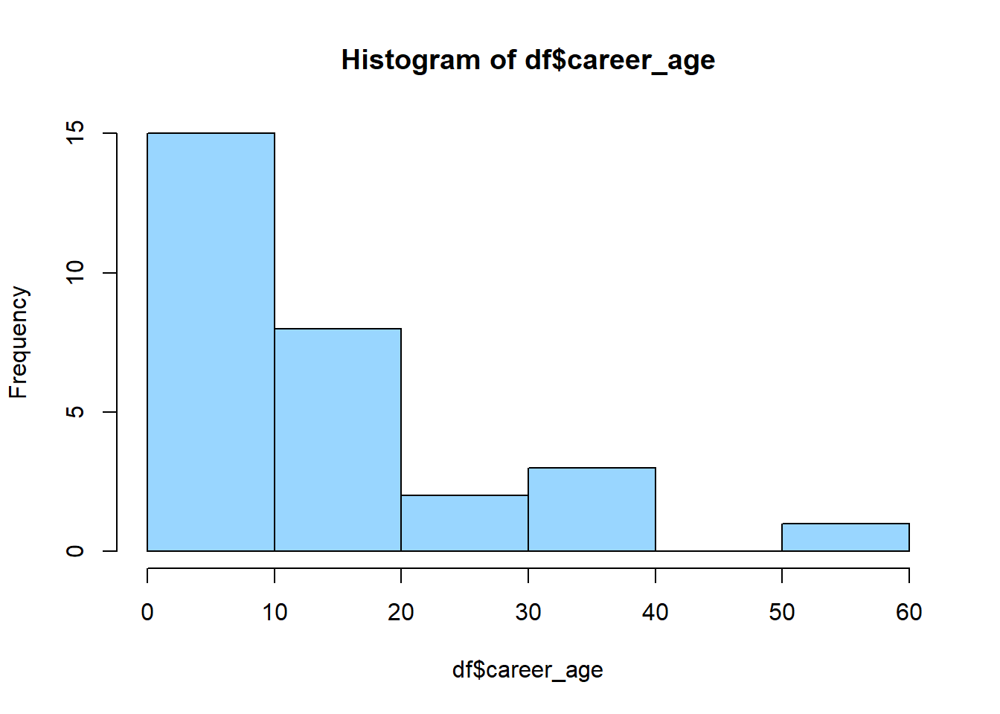
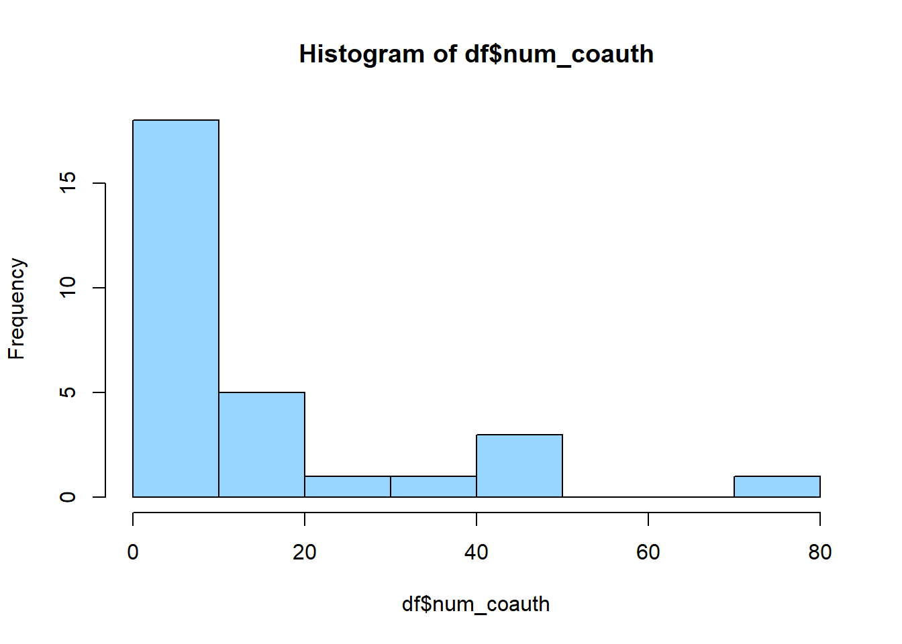
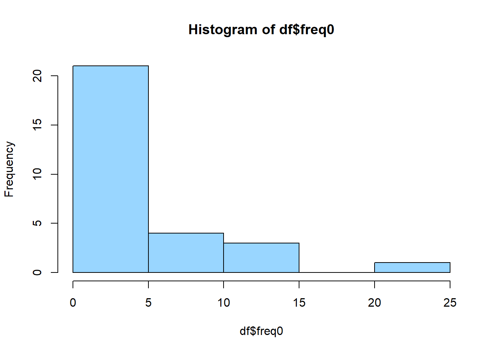

rm(list = ls())
packages = c("RSiena", "tidyverse", "stringdist", "stringi", "dplyr", "stringr")
require("magrittr")
library(tidyverse)
library(stringr)
library(RSiena)
library(stringdist)
library(stringi)
library(dplyr)
library(stringr)
library(igraph)
fpackage.check <- function(packages) {
lapply(packages, FUN = function(x) {
if (!require(x, character.only = TRUE)) {
install.packages(x, dependencies = TRUE)
library(x, character.only = TRUE)
}
})
}
fsave <- function(x, file = NULL, location = "./data/processed/") {
ifelse(!dir.exists("data"), dir.create("data"), FALSE)
ifelse(!dir.exists("data/processed"), dir.create("data/processed"), FALSE)
if (is.null(file))
file = deparse(substitute(x))
datename <- substr(gsub("[:-]", "", Sys.time()), 1, 8)
totalname <- paste(location, datename, file, ".rda", sep = "")
save(x, file = totalname) #need to fix if file is reloaded as input name, not as x.
}
fload <- function(filename) {
load(filename)
get(ls()[ls() != "filename"])
}
fshowdf <- function(x, ...) {
knitr::kable(x, digits = 2, "html", ...) %>%
kableExtra::kable_styling(bootstrap_options = c("striped", "hover")) %>%
kableExtra::scroll_box(width = "100%", height = "300px")
}
# this is the most important one. We created it in the previous script
f_pubnets <- function(df_scholars = df, list_publications = publications, discip = "sociology", affiliation = "RU",
waves = list(wave1 = c(2017, 2018, 2019), wave2 = c(2020, 2021, 2022))) {
publications <- list_publications %>%
dplyr::bind_rows() %>%
dplyr::distinct(title, .keep_all = TRUE)
df_scholars %>%
dplyr::filter(affil1 == affiliation | affil2 == affiliation) %>%
dplyr::filter(discipline == discip) -> df_sel
networklist <- list()
for (wave in 1:length(waves)) {
networklist[[wave]] <- matrix(0, nrow = nrow(df_sel), ncol = nrow(df_sel))
}
publicationlist <- list()
for (wave in 1:length(waves)) {
publicationlist[[wave]] <- publications %>%
filter(gs_id %in% df_sel$gs_id) %>%
filter(year %in% waves[[wave]]) %>%
dplyr::select(author) %>%
lapply(str_split, pattern = "," )
}
publicationlist2 <- list()
for (wave in 1:length(waves)) {
publicationlist2[[wave]] <- publicationlist[[wave]]$author %>%
# lowercase
lapply(tolower) %>%
# Removing diacritics
lapply(stri_trans_general, id = "latin-ascii") %>%
# only last name
lapply(word, start = -1, sep = " ") %>%
# only last last name
lapply(word, start = -1, sep = "-")
}
for (wave in 1:length(waves)) {
# let us remove all publications with only one author
remove <- which(sapply(publicationlist2[[wave]], FUN = function(x) length(x) == 1) == TRUE)
publicationlist2[[wave]] <- publicationlist2[[wave]][-remove]
}
for (wave in 1:length(waves)) {
pubs <- publicationlist2[[wave]]
for (ego in 1:nrow(df_sel)) {
# which ego?
lastname_ego <- df_sel$lastname[ego]
# for all publications
for (pub in 1:length(pubs)) {
# only continue if ego is author of pub
if (lastname_ego %in% pubs[[pub]]) {
aut_pot <- which.max(pubs[[pub]] %in% lastname_ego)
# only continue if ego is first author of pub
if (aut_pot == 1) {
# check all alters/co-authors
for (alter in 1:nrow(df_sel)) {
# which alter
lastname_alter <- df_sel$lastname[alter]
if (lastname_alter %in% pubs[[pub]]) {
networklist[[wave]][ego, alter] <- networklist[[wave]][ego, alter] + 1
}
}
}
}
}
}
}
return(list(df = df_sel, network = networklist))
}Waar ze online vandaan komen beschrijven
df_soc <- fload("./Data/Data_processed/20230621df_complete.rda")
soc_df <- fload("./Data/Data_processed/soc_df.RData")view(df_soc) view(soc_df)
total <- merge(df_soc, soc_df,by="gs_id")
view(total)
save(total,file="totaldata.Rda")df <- fload("./Data/Data_processed/totaldata.rda")
publications <- fload("./Data/Data_processed/20230621list_publications_jt.rda")
# str(publications)
output <- f_pubnets(df_scholars = df, list_publications = publications, discip = "sociology", affiliation = "RU",
waves = list(wave1 = c(2017, 2018, 2019), wave2 = c(2020, 2021, 2022)))
df_soc <- output[[1]]
df_network <- output[[2]]
view(df)net1 <- df_network[[1]]
diag(net1) <- 0
g1 <- graph_from_adjacency_matrix(net1)
plot(g1)
ecount(g1)## [1] 70vcount(g1)## [1] 29edgelistwave1 <- data.frame(net1)
edgeswave1 <- as.matrix(edgelistwave1, rownames.force = TRUE) # matrix because igraph wants that
# Remove rows with negative node IDs
edgeswave1 - min(edgeswave1) + 1## X1 X2 X3 X4 X5 X6 X7 X8 X9 X10 X11 X12 X13 X14 X15 X16 X17 X18 X19 X20 X21 X22 X23 X24 X25 X26
## 1 1 1 1 1 1 1 1 6 1 1 6 1 1 1 1 1 1 1 1 1 1 1 1 1 1 1
## 2 1 1 3 1 1 1 1 1 1 1 2 1 1 4 1 1 1 1 1 1 1 1 1 1 1 1
## 3 1 1 1 1 1 1 1 1 1 1 1 1 1 1 1 1 1 1 1 1 1 1 1 1 1 1
## 4 1 1 1 1 1 1 1 1 1 1 1 1 1 1 1 1 1 1 1 1 1 1 1 1 1 1
## 5 1 1 1 1 1 1 1 1 1 1 1 1 1 3 1 1 1 1 1 1 1 1 1 1 1 1
## 6 1 1 1 1 1 1 1 1 1 1 1 1 1 1 1 1 1 1 1 1 1 1 1 1 1 1
## 7 1 1 1 1 1 1 1 1 1 1 1 1 1 1 1 4 1 1 1 1 1 1 1 1 1 1
## 8 1 1 1 1 1 1 1 1 1 1 2 1 1 1 1 1 1 1 1 1 1 1 1 1 1 1
## 9 1 1 1 1 1 1 1 1 1 1 2 1 1 5 1 1 1 1 1 1 1 1 1 1 4 1
## 10 1 1 1 1 1 1 1 3 1 1 1 1 1 9 1 11 1 1 1 1 7 1 1 1 1 1
## 11 1 1 1 1 1 1 1 1 1 1 1 1 1 1 1 1 1 1 1 1 2 1 1 1 1 1
## 12 1 1 1 1 1 1 1 1 1 1 1 1 1 1 1 1 1 1 1 1 1 1 1 1 1 1
## 13 1 1 1 1 1 1 1 1 1 1 1 1 1 1 1 1 1 1 1 1 1 1 1 1 1 1
## 14 1 1 1 1 1 1 1 1 3 1 1 1 1 1 1 1 1 1 1 1 1 3 1 1 1 1
## 15 1 1 1 1 1 1 1 1 1 1 1 1 1 3 1 1 1 1 1 1 1 1 1 1 1 1
## 16 1 1 1 1 1 1 1 1 1 1 1 1 1 1 1 1 1 1 1 1 1 1 1 1 1 1
## 17 1 1 1 1 1 1 1 1 1 1 1 1 1 1 1 1 1 1 1 1 1 1 1 1 1 1
## 18 1 1 1 1 1 1 1 1 1 1 1 1 1 1 1 1 1 1 1 1 1 1 1 1 1 1
## 19 1 1 2 1 1 1 1 1 1 1 1 1 1 1 1 1 1 1 1 1 1 1 1 1 1 1
## 20 1 1 1 1 1 1 1 1 1 1 1 1 1 1 1 1 1 1 1 1 1 1 1 1 1 1
## 21 1 1 1 1 1 1 1 1 1 1 1 1 1 1 1 1 1 1 1 1 1 1 1 1 1 1
## 22 1 1 1 1 1 1 1 1 1 1 1 1 1 1 1 1 1 1 1 1 1 1 1 1 1 1
## 23 1 1 1 1 1 1 1 1 1 1 1 1 1 1 1 1 1 1 1 1 1 1 1 1 1 1
## 24 1 1 1 1 1 1 1 1 1 1 1 1 1 1 1 1 1 1 2 1 1 1 1 1 1 1
## 25 1 1 1 1 1 1 1 1 1 1 1 1 1 1 1 1 1 1 1 1 1 1 1 1 1 1
## 26 1 1 1 1 1 1 1 1 1 1 1 1 1 1 1 1 1 1 1 1 1 1 1 1 1 1
## 27 1 1 1 1 1 1 1 1 1 1 1 1 1 1 1 1 1 1 1 1 1 1 1 1 1 1
## 28 1 1 3 1 1 1 1 2 1 1 1 1 1 1 1 1 1 1 1 1 1 1 1 1 1 1
## 29 1 1 1 1 1 1 1 1 1 1 1 1 1 3 1 1 1 1 1 1 1 1 1 1 1 1
## X27 X28 X29
## 1 1 1 1
## 2 1 1 1
## 3 1 1 1
## 4 1 1 1
## 5 1 1 1
## 6 1 1 1
## 7 1 1 1
## 8 1 1 1
## 9 1 1 1
## 10 1 1 1
## 11 1 1 1
## 12 1 1 1
## 13 1 1 1
## 14 1 1 1
## 15 1 1 1
## 16 1 1 1
## 17 1 1 1
## 18 1 1 1
## 19 1 1 1
## 20 1 1 1
## 21 1 1 1
## 22 1 1 1
## 23 1 1 1
## 24 1 1 1
## 25 1 1 1
## 26 1 1 1
## 27 1 1 1
## 28 1 1 1
## 29 1 1 1df_soc$RID <- 1:nrow(df_soc)
onlyRU1 <- left_join(edgelistwave1, df_soc[, c("RID", "gender.y")], by = c ("X1" = "RID"))
onlyRU1 <- left_join(onlyRU1, df_soc[, c("RID", "gender.y")], by = c ("X2" = "RID"))net2 <- df_network[[2]]
diag(net2) <- 0
g2 <- graph_from_adjacency_matrix(net2)
plot(g2)
ecount(g2)## [1] 71vcount(g2)## [1] 29edgelistwave2 <- data.frame(net2)
edgeswave2 <- as.matrix(edgelistwave2, rownames.force = TRUE) # matrix because igraph wants that
# Remove rows with negative node IDs
edgeswave2 - min(edgeswave2) + 1## X1 X2 X3 X4 X5 X6 X7 X8 X9 X10 X11 X12 X13 X14 X15 X16 X17 X18 X19 X20 X21 X22 X23 X24 X25 X26
## 1 1 1 1 1 1 1 1 3 1 1 1 1 1 1 1 1 1 1 1 1 1 1 1 1 1 1
## 2 1 1 1 1 1 1 1 1 1 1 5 1 1 7 1 1 1 1 1 1 1 1 1 1 1 1
## 3 1 1 1 1 1 1 1 1 1 1 1 1 1 1 1 1 1 1 2 1 1 1 2 1 1 1
## 4 1 1 1 1 1 1 1 1 1 1 1 1 1 1 1 1 1 1 1 1 1 1 1 1 2 1
## 5 3 1 1 1 1 1 1 3 1 1 1 1 1 3 1 1 1 1 1 1 1 1 1 1 3 1
## 6 1 1 1 1 1 1 1 1 1 1 1 1 1 1 1 1 1 1 1 1 1 1 1 1 1 1
## 7 1 1 1 1 1 1 1 1 1 1 1 1 1 1 1 1 1 1 1 1 1 1 1 1 1 1
## 8 2 1 1 1 1 1 1 1 1 1 1 1 1 1 1 1 1 1 1 1 1 1 1 1 1 1
## 9 1 1 1 1 1 1 1 1 1 1 1 1 1 1 1 1 1 1 1 1 1 1 1 1 1 1
## 10 1 1 1 1 1 1 1 1 1 1 1 1 1 1 1 1 1 1 1 1 1 1 1 1 1 1
## 11 2 1 1 1 1 1 1 1 1 1 1 1 1 1 1 1 1 1 1 1 1 1 1 1 1 1
## 12 1 1 3 1 1 1 1 1 1 1 1 1 1 1 1 1 1 1 1 1 1 1 1 1 1 1
## 13 1 1 1 1 1 1 1 1 1 1 1 1 1 1 1 1 1 1 1 1 1 1 1 1 1 1
## 14 1 1 1 1 1 1 1 1 2 1 1 1 1 1 1 1 1 1 1 1 1 2 1 1 1 1
## 15 1 1 1 1 1 1 1 1 1 1 1 1 1 2 1 1 1 2 1 1 1 1 1 1 1 1
## 16 2 1 1 1 1 1 1 2 1 1 1 1 1 1 1 1 1 1 1 1 1 1 1 1 1 1
## 17 1 1 1 1 1 1 1 1 1 1 1 1 1 1 1 1 1 1 1 1 1 1 1 1 1 1
## 18 1 1 1 1 1 1 1 1 1 1 1 1 1 1 1 1 1 1 1 1 1 1 1 1 1 1
## 19 1 1 1 1 1 1 1 1 2 1 1 1 1 1 1 4 1 1 1 1 5 1 1 1 1 1
## 20 1 1 1 1 1 1 1 1 1 1 1 1 1 1 1 1 1 1 1 1 1 1 1 1 1 1
## 21 1 1 1 1 1 1 1 1 1 1 1 1 1 1 1 1 1 1 1 1 1 1 1 1 1 1
## 22 1 1 1 1 1 1 1 1 1 1 1 1 1 1 1 1 1 1 1 1 1 1 1 1 1 1
## 23 1 1 3 1 1 1 1 2 1 1 1 1 1 1 1 1 1 1 1 1 1 1 1 1 1 1
## 24 1 1 1 1 1 1 1 1 1 1 1 1 1 1 1 1 1 1 1 1 1 1 1 1 2 1
## 25 1 1 1 1 1 1 1 1 1 1 1 1 1 1 1 1 1 1 1 1 1 1 1 1 1 1
## 26 1 1 2 1 1 1 1 1 1 7 1 1 1 1 1 1 1 1 1 1 1 1 1 1 9 1
## 27 1 1 1 1 1 1 1 1 3 1 1 1 1 3 1 1 1 1 1 1 1 1 1 1 1 1
## 28 1 1 5 1 1 1 1 1 1 1 1 1 1 1 1 1 1 1 1 1 1 1 1 1 1 1
## 29 1 1 1 1 1 1 1 1 1 1 1 1 1 1 1 1 1 1 1 1 1 1 1 1 1 1
## X27 X28 X29
## 1 1 1 2
## 2 1 1 1
## 3 1 3 1
## 4 1 1 1
## 5 1 1 1
## 6 1 1 1
## 7 1 1 1
## 8 1 1 1
## 9 1 1 1
## 10 1 1 1
## 11 1 1 1
## 12 1 1 1
## 13 1 1 1
## 14 1 1 1
## 15 1 1 1
## 16 1 1 1
## 17 1 1 1
## 18 1 1 1
## 19 1 1 1
## 20 1 1 1
## 21 1 1 1
## 22 1 1 1
## 23 1 1 1
## 24 1 1 1
## 25 1 1 1
## 26 1 1 1
## 27 1 1 1
## 28 1 1 1
## 29 1 1 1df_soc$RID <- 1:nrow(df_soc)
onlyRU2 <- left_join(edgelistwave2, df_soc[, c("RID", "gender.y")], by = c ("X1" = "RID"))
onlyRU2 <- left_join(onlyRU2, df_soc[, c("RID", "gender.y")], by = c ("X2" = "RID"))onlyRU1$gendersimilar <- NA
onlyRU1$gendersimilar[onlyRU1$gender.y.x == "man" & onlyRU1$gender.y.y == "man"] <- 1
onlyRU1$gendersimilar[onlyRU1$gender.y.x == "woman" & onlyRU1$gender.y.y == "woman"] <- 1
onlyRU1$gendersimilar[onlyRU1$gender.y.x == "man" & onlyRU1$gender.y.y == "woman" ] <- 0
onlyRU1$gendersimilar[onlyRU1$gender.y.x == "woman" & onlyRU1$gender.y.y == "man" ] <- 0
summary(onlyRU1$gendersimilar)## Min. 1st Qu. Median Mean 3rd Qu. Max. NA's
## NA NA NA NaN NA NA 29view(onlyRU1)
onlyRU1$percentageww <- NA
onlyRU1$percentageww[onlyRU1$gender.y.x == "woman" & onlyRU1$gender.y.y == "man"] <- 0
onlyRU1$percentageww[onlyRU1$gender.y.x == "woman" & onlyRU1$gender.y.y == "woman"] <- 1
onlyRU1$percentageww[onlyRU1$gender.y.x == "man" & onlyRU1$gender.y.y == "man"] <- NA
onlyRU1$percentageww[onlyRU1$gender.y.x == "man" & onlyRU1$gender.y.y == "woman"] <- NA
summary(onlyRU1$percentageww)## Min. 1st Qu. Median Mean 3rd Qu. Max. NA's
## NA NA NA NaN NA NA 29onlyRU1$percentagemm <- NA
onlyRU1$percentagemm[onlyRU1$gender.y.x == "man" & onlyRU1$gender.y.y == "man"] <- 1
onlyRU1$percentagemm[onlyRU1$gender.y.x == "man" & onlyRU1$gender.y.y == "woman"] <- 0
onlyRU1$percentagemm[onlyRU1$gender.y.x == "woman" & onlyRU1$gender.y.y == "man"] <- NA
onlyRU1$percentagemm[onlyRU1$gender.y.x == "woman" & onlyRU1$gender.y.y == "woman"] <- NA
summary(onlyRU1$percentagemm)## Min. 1st Qu. Median Mean 3rd Qu. Max. NA's
## NA NA NA NaN NA NA 29onlyRU2$gendersimilar2 <- NA
onlyRU2$gendersimilar2[onlyRU2$gender.y.x == "man" & onlyRU2$gender.y.y == "man"] <- 1
onlyRU2$gendersimilar2[onlyRU2$gender.y.x == "woman" & onlyRU2$gender.y.y == "woman"] <- 1
onlyRU2$gendersimilar2[onlyRU2$gender.y.x == "man" & onlyRU2$gender.y.y == "woman" ] <- 0
onlyRU2$gendersimilar2[onlyRU2$gender.y.x == "woman" & onlyRU2$gender.y.y == "man" ] <- 0
onlyRU2$percentagemm2[onlyRU2$X1 == onlyRU2$X2] <- NA
summary(onlyRU2$gendersimilar2)## Min. 1st Qu. Median Mean 3rd Qu. Max. NA's
## NA NA NA NaN NA NA 29onlyRU2$percentageww2 <- NA
onlyRU2$percentageww2[onlyRU2$gender.y.x == "man" & onlyRU2$gender.y.y == "man"] <- NA
onlyRU2$percentageww2[onlyRU2$gender.y.x == "woman" & onlyRU2$gender.y.y == "woman"] <- 1
onlyRU2$percentageww2[onlyRU2$gender.y.x == "man" & onlyRU2$gender.y.y == "woman" ] <- NA
onlyRU2$percentageww2[onlyRU2$gender.y.x == "woman" & onlyRU2$gender.y.y == "man" ] <- 0
onlyRU2$percentagemm2[onlyRU2$X1 == onlyRU2$X2] <- NA
summary(onlyRU2$percentageww2)## Min. 1st Qu. Median Mean 3rd Qu. Max. NA's
## NA NA NA NaN NA NA 29onlyRU2$percentagemm2 <- NA
onlyRU2$percentagemm2[onlyRU2$gender.y.x == "man" & onlyRU2$gender.y.y == "man"] <- 1
onlyRU2$percentagemm2[onlyRU2$gender.y.x == "woman" & onlyRU2$gender.y.y == "woman"] <- NA
onlyRU2$percentagemm2[onlyRU2$gender.y.x == "man" & onlyRU2$gender.y.y == "woman" ] <- 0
onlyRU2$percentagemm2[onlyRU2$gender.y.x == "woman" & onlyRU2$gender.y.y == "man" ] <- NA
onlyRU2$percentagemm2[onlyRU2$X1 == onlyRU2$X2] <- NA
summary(onlyRU2$percentagemm2)## Min. 1st Qu. Median Mean 3rd Qu. Max. NA's
## NA NA NA NaN NA NA 29summary(onlyRU1$gendersimilar)## Min. 1st Qu. Median Mean 3rd Qu. Max. NA's
## NA NA NA NaN NA NA 29summary(onlyRU2$gendersimilar2)## Min. 1st Qu. Median Mean 3rd Qu. Max. NA's
## NA NA NA NaN NA NA 29ecount(g1)## [1] 70vcount(g1)## [1] 29ecount(g2)## [1] 71vcount(g2)## [1] 29degreewave1 <- igraph::degree(g1)
degreewave2 <- igraph::degree(g2)#par(mfrow=c(3,1))
hist(degreewave1, col="#99d6ff") ## Histogram of the number of degree in wave 2
hist(degreewave2, col="#99d6ff")
igraph::dyad.census(g1)## $mut
## [1] 1
##
## $asym
## [1] 22
##
## $null
## [1] 383igraph::triad.census(g1)## [1] 3089 158 352 11 23 12 5 3 1 0 0 0 0 0 0 0igraph::edge_density(g1)## [1] 0.0862069igraph::dyad.census(g2)## $mut
## [1] 3
##
## $asym
## [1] 27
##
## $null
## [1] 376igraph::triad.census(g2)## [1] 2914 314 359 14 21 18 6 4 1 0 1 2 0 0 0 0igraph::edge_density(g2)## [1] 0.08743842igraph::transitivity(g1)## [1] 0.05263158igraph::transitivity(g2)## [1] 0.1232877hist(df$num_pubs, col="#99d6ff")
hist(df$career_age, col="#99d6ff")
summary(df$career_age)## Min. 1st Qu. Median Mean 3rd Qu. Max.
## 2.00 6.00 10.00 14.34 18.00 51.00hist(df$num_coauth, col="#99d6ff")
summary(df$num_coauth)## Min. 1st Qu. Median Mean 3rd Qu. Max.
## 0.00 0.00 6.00 13.14 16.00 75.00df$freq0 <- df$Freq
df$freq0[is.na(df$freq0)] <- 0
hist(df$freq0, col="#99d6ff")
summary(df$freq0)## Min. 1st Qu. Median Mean 3rd Qu. Max.
## 0.000 0.000 1.000 4.103 7.000 22.000outIso?
network-isolate effect, (isolateNet), the effect of ego having in-degree as well as out-degree zero, i.e., being a total isolate,snet i56(x, z) = I{x+i = xi+ = 0} ; anti isolates effect, (antiIso), the effect of wishing to connect to others who otherwise would be a total isolate, i.e., have no incoming or outgoing ties, and wishing not to sever connections to others who thereby would become a total isolate,snet i57(x) = Pj I{x+j ≥ 1, xj+ = 0};
covariate-related similarity × reciprocity (simRecipX)
outdegree activity to same covariate (sameXOutAct) defined by the squared number of ties to those others who have the same covariate value as i